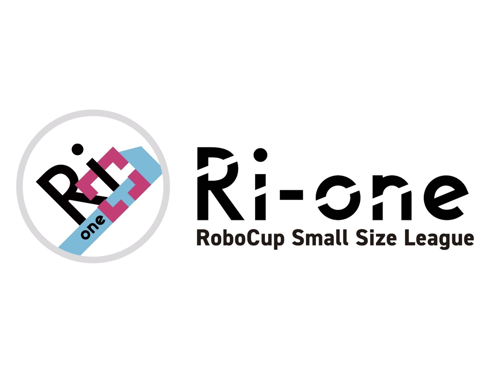
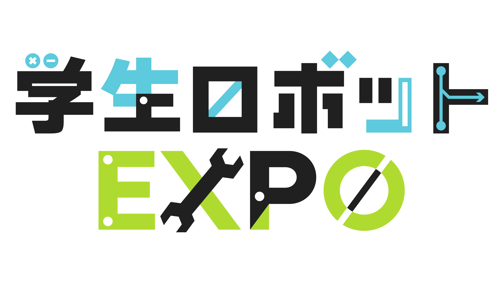
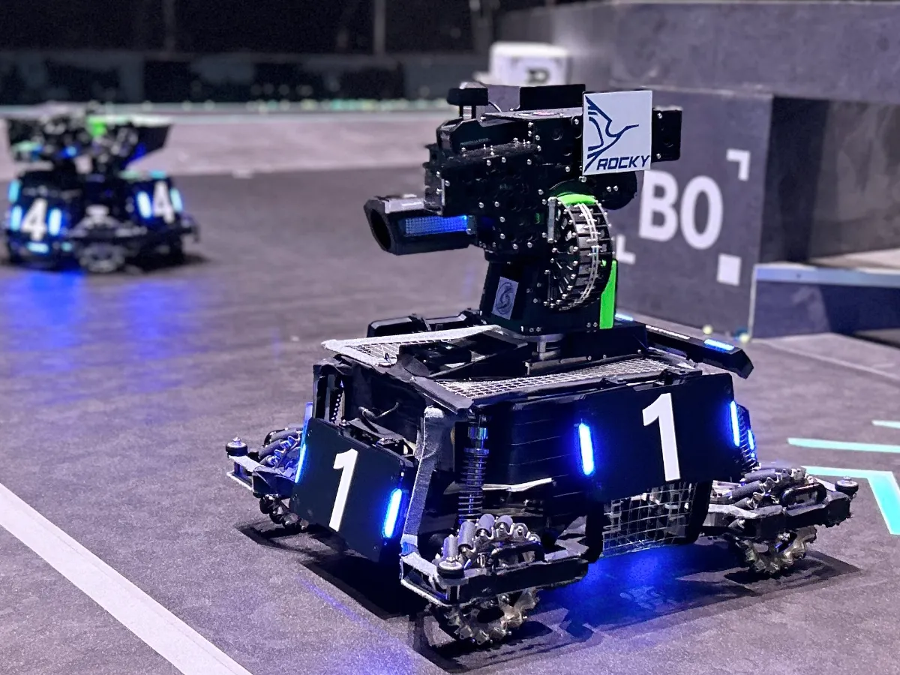
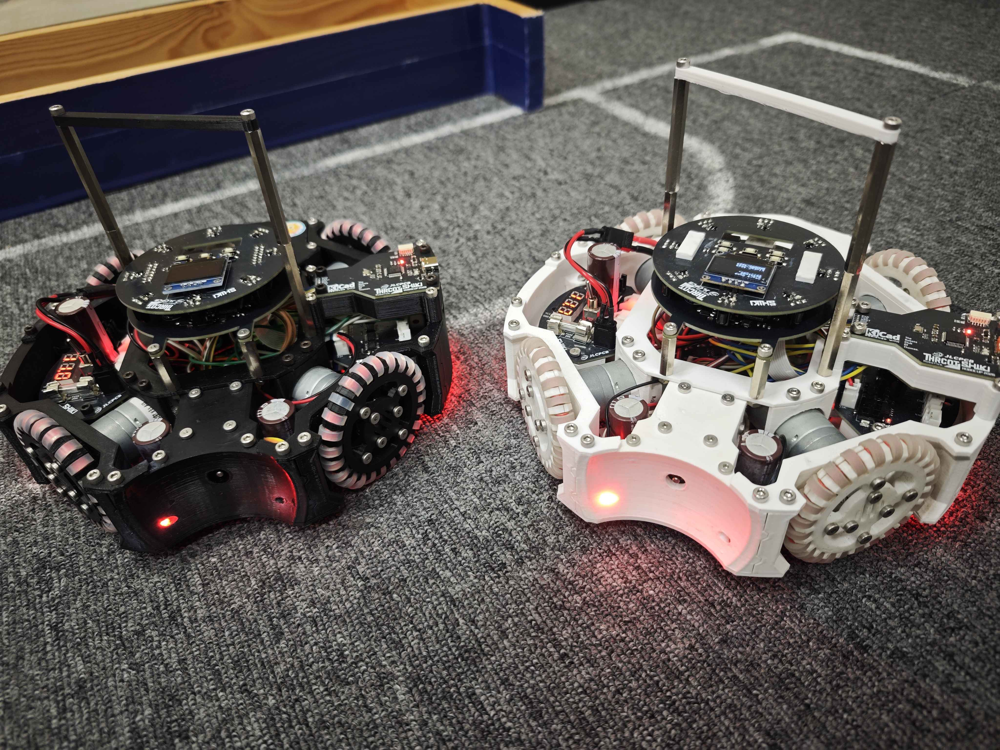
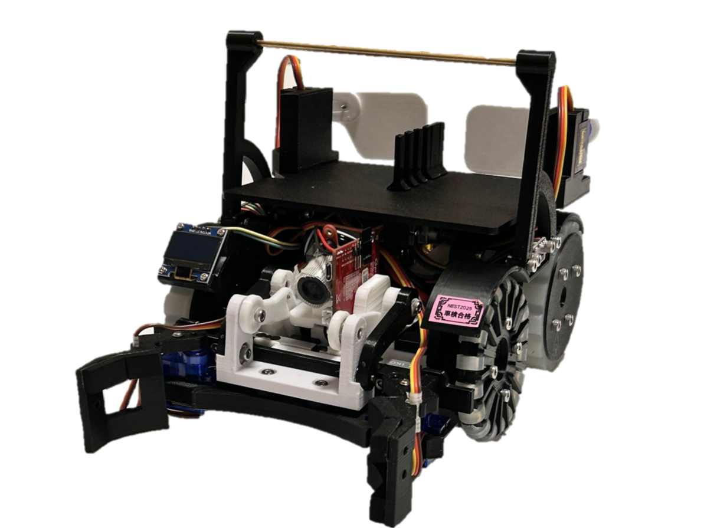
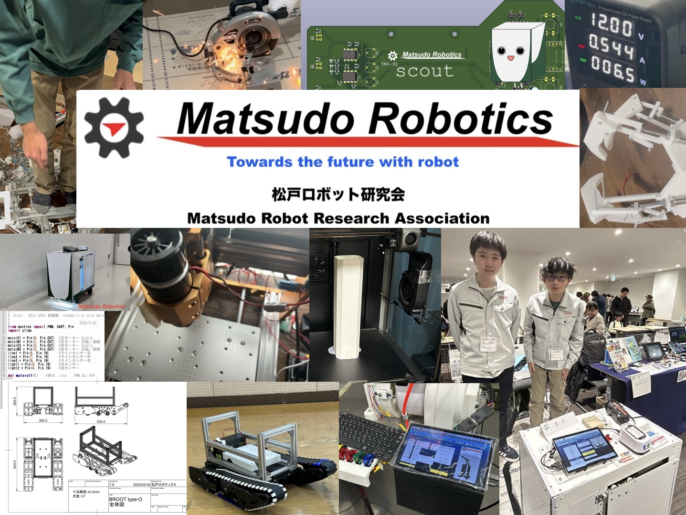
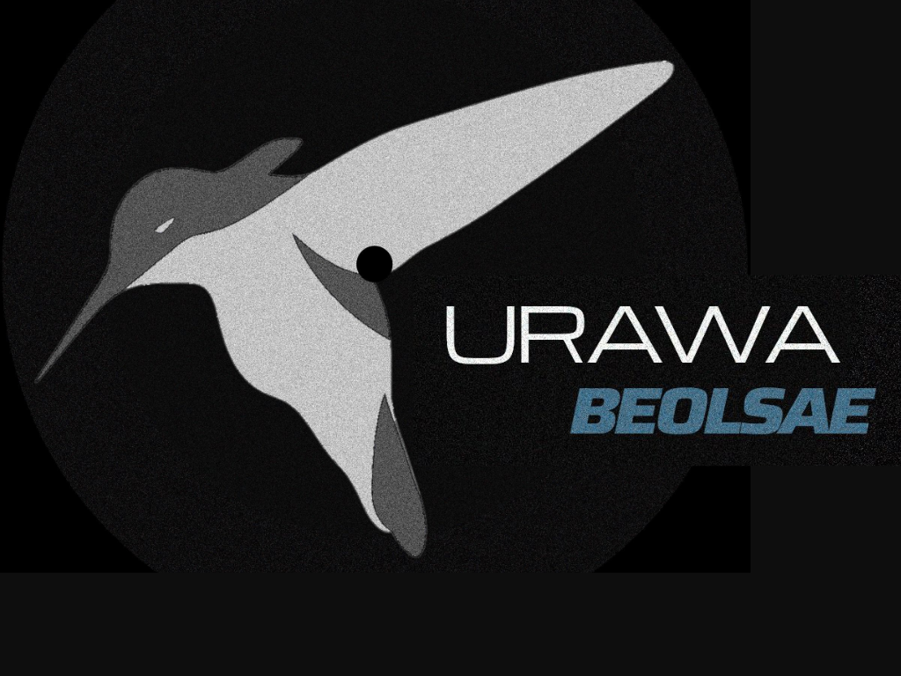
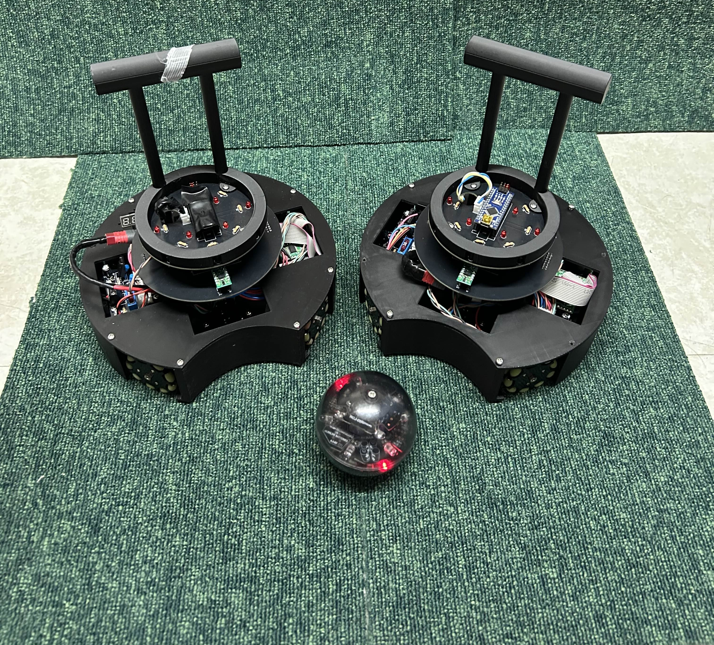

Ri-one
立命館大学情報理工学部プロジェクト団体Ri-oneです。RoboCup2024 SSL Div.B優勝。Div.A優勝を目指し挑戦を続けています。ぜひブースへお越し下さい。


立命館大学情報理工学部プロジェクト団体Ri-oneです。RoboCup2024 SSL Div.B優勝。Div.A優勝を目指し挑戦を続けています。ぜひブースへお越し下さい。

OOEDO SAMURAIは、RoboMasterに参加する日本の学生チームです 技術力と創造性を駆使して自作ロボットで世界の舞台に挑戦しています。

岐阜工業高等専門学校のメンバーが集まり結成されたロボカップジュニアのチームです。機械・回路・制御それぞれがお互いに綿密な連携を行い世界大会への出場を目指します。

去年度までロボカップジュニアレスキューラインに出場していました。芝浦工業大学附属中学高等学校 電子技術研究部に所属しています。

千葉県松戸市を拠点にロボット製作をしている松戸ロボティクスです。2024RCJに出場した運搬ロボットを動かします。エアーで動くハンドなども展示するのでぜひお立ち寄りください！

RCJライトウェイト、埼玉県立浦和高校物理部の2年生チームです。RCJに今年度初出場しています。皆さんから多くの学びを得ることを楽しみにしています。よろしくお願いします！

RRCJJサッカーライトウェイト出場チームです。関東ブロック,東東京ノード